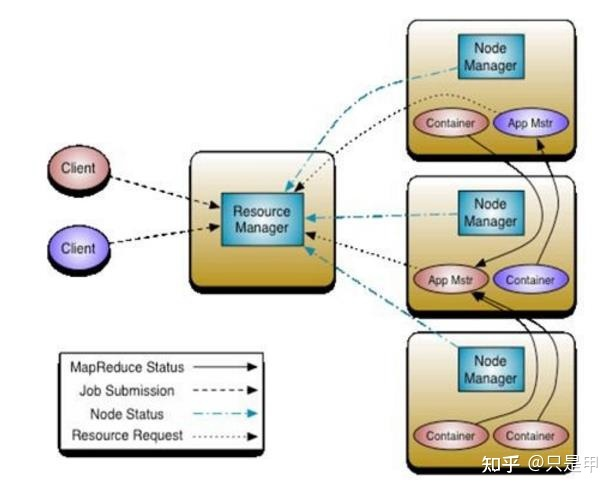
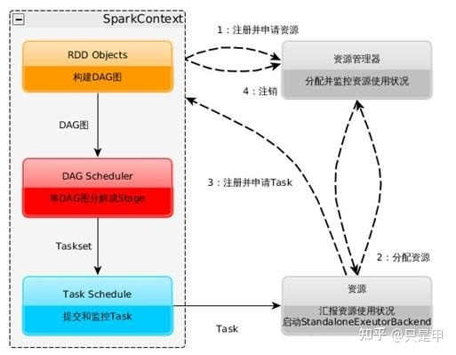

TreeviewCopyright © qgao 2021-* all right reserved, powered by aleen42
Spark on Yarn
1 Yarn的基本架构
Yarn的3个组件:
- ResourceManager、
- NodeManager、
- Application Manager

2 Spark on Yarn
通过spark-submit命令可以运行spark的程序，如下所示:
spark-submit --master MASTER_URL --deploy-mode DEPLOY_MODE
其中MASTER_URL有4种模式：
Local: local/local[K]、local[*]Standalone:spark://HOSR:PORTMesos:mesos://HOST:PORTYARN: yarn-client、yarn-cluster（根据本地hadoop配置）
调度pyspark程序实例:
-- spark 2.4.0版本
spark-submit --master local xxxx.py
spark-submit --master yarn --deploy-mode cluster xxxx.py
spark-submit --master yarn --deploy-mode client xxxx.py
2.1 YARN-Cluster模式
资源申请、分配在Application Master完成，
任务执行计划、调度也在Application Master完成。
2.2 YARN-Client模式
资源申请、分配在Application Master完成，
任务执行计划、调度在Client端完成。

3 Spark Job
SparkContext：
- 构建DAG图
- 将DAG图分解成Stage
- 把Taskset发送给Task Scheduler
